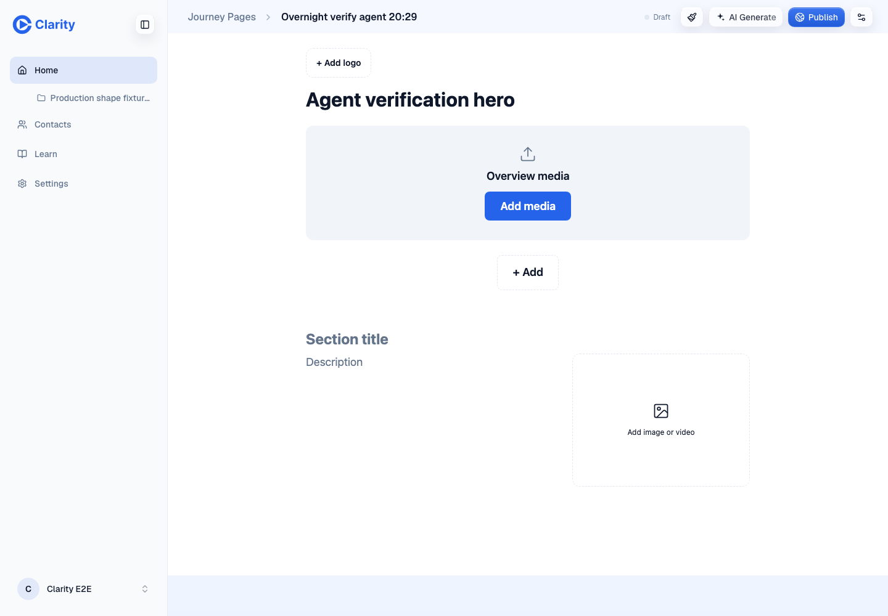
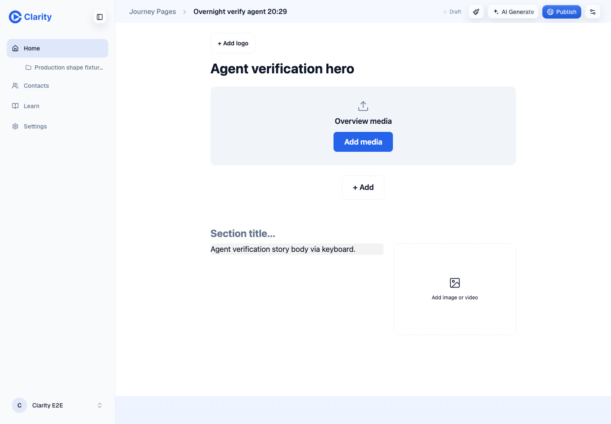
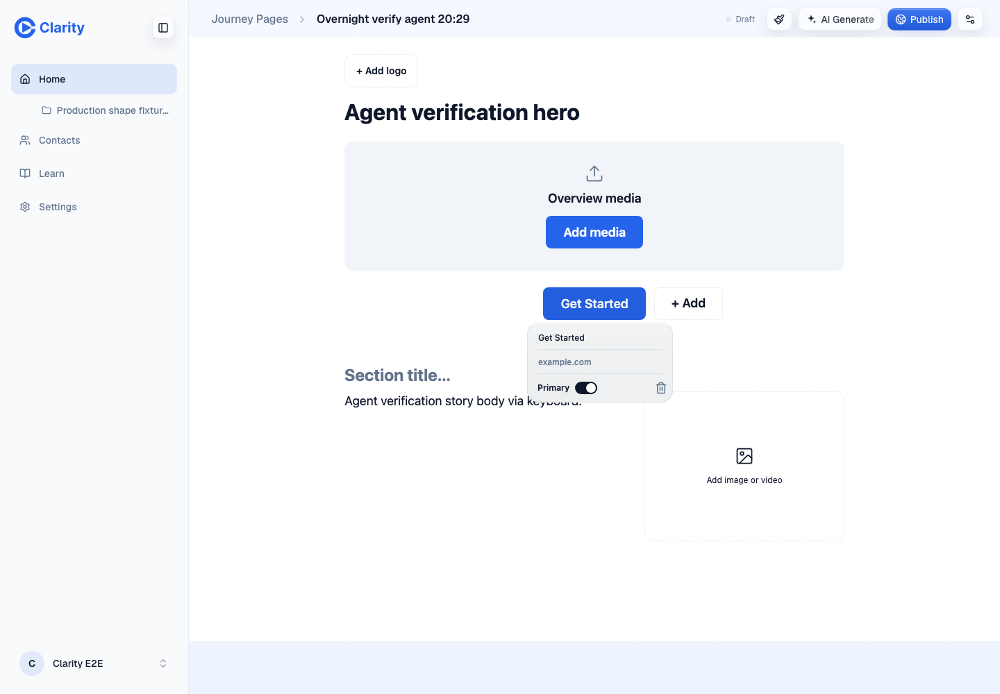
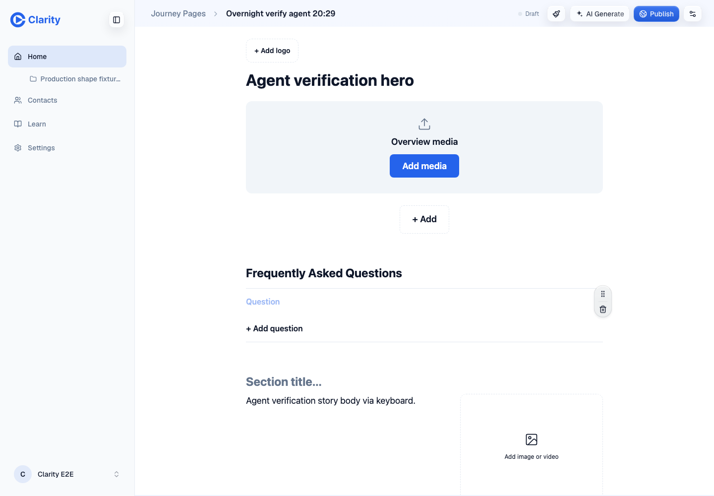
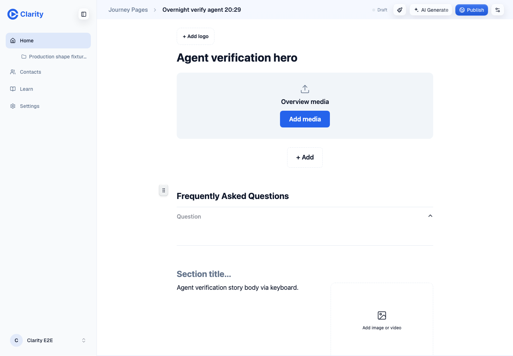
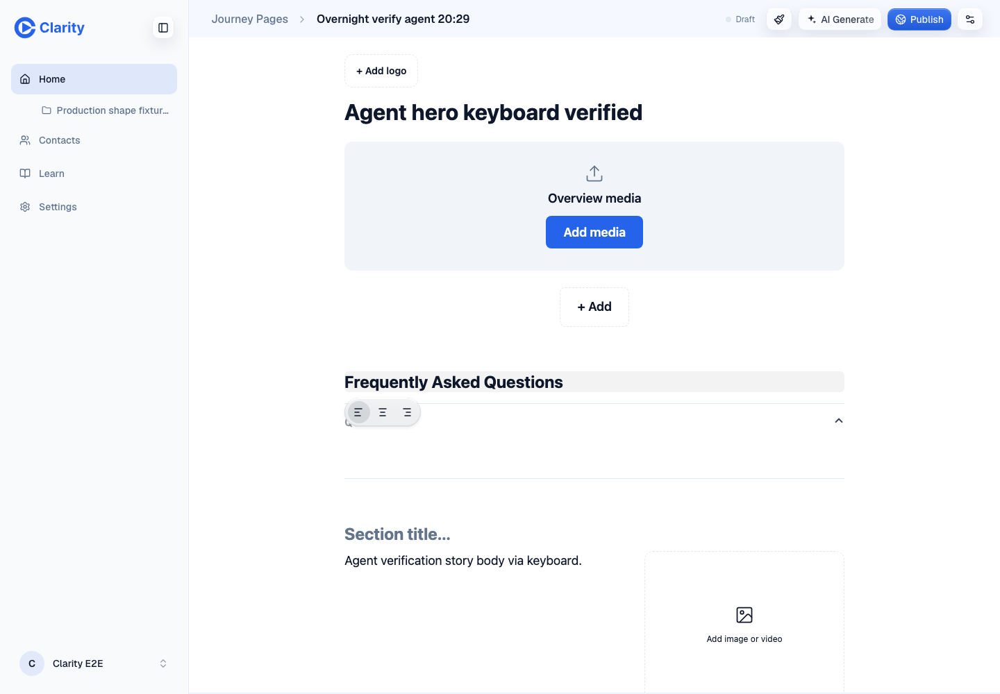
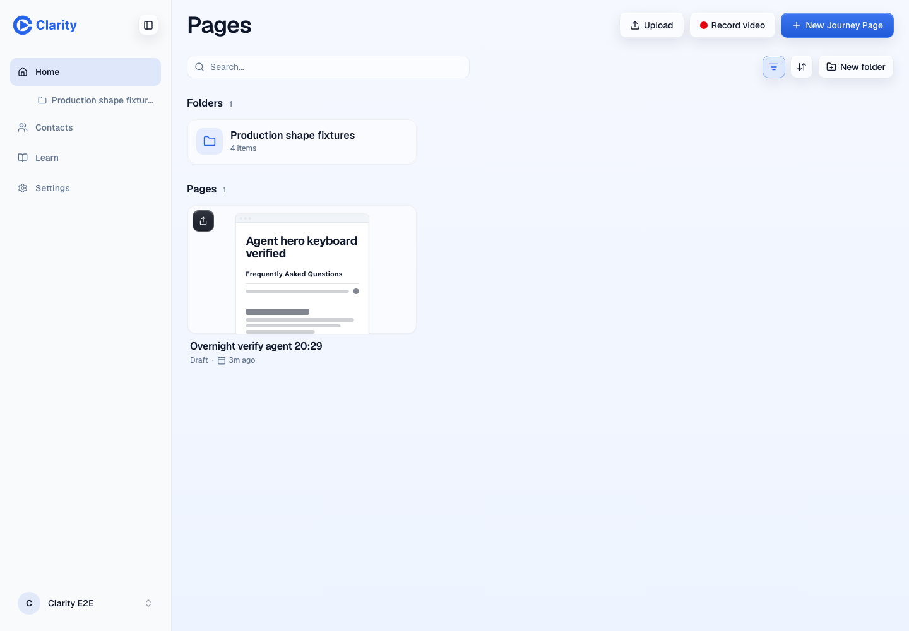
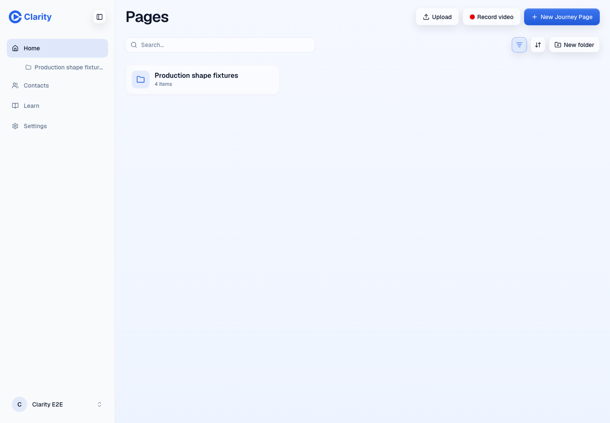

| Check | Result |
|---|---|
| Conformance | Pass, 13/13 |
| API acceptance and read operations | Pass |
| Migration over main | Pass |
| Canvas, library and settings | Pass |
| Cleanup | Pass |
| Local gates | Pass; React Doctor did not scan |
| PR Proof Gate | Fail, outdated head in Proof |
VERDICT: FINDINGS VERIFIED behavior on https://pr-1024.clarity-video.workers.dev at `872460edd043a63861d778a52fc2af7f19f01948`. The PR is not merge-ready because its Proof Gate still names the previous head. No product defect found in the full diff audit or runtime checks. Evidence directory: `/Users/williamlarsten/Development/clarity-overnight-1006/verify/agent/`. | Gate | Result | Evidence | |---|---|---| | Frozen install | Pass | install.log | | Typecheck | Pass, existing test-type budget is 207 | typecheck.log | | Root tests | Pass, 4,459 Vitest tests and 343 script tests; one script test skipped | test.log | | Editor build | Pass, large-chunk warning | build.log | | Lint | Exit 0; React Doctor reports it is not installed and did not scan | lint.log | | LOC ratchet and guards | Pass | ratchet.log, guards.log | | Preview head and authenticated doctor | Pass | doctor.log, deploy-info.json | | Acceptance criterion | Result and evidence | |---|---| | Full MCP conformance | Pass, 13/13. conformance.json | | Revoked client with refreshed token | Pass, 403 connection_revoked. api-evidence.json | | Unseen client after revocation | Pass, 403 connection_pending. api-evidence.json | | Eleventh live client and re-enable at cap | Pass, 403 too_many_connections and 409. api-evidence.json | | Leads and contacts permission | Pass, both refused before grant and readable after grant. api-evidence.json, read-evidence.json | | Owner API isolation | Pass, 401 without cookie, 403 foreign Origin, 404 for another owner on revoke, enable and permission changes. api-evidence.json | | Read operations | Pass against seeded library, video, page, statistics and leads. Missing approval returns not_found. read-evidence.json | | Tables and no read audit rows | Pass, all three tables exist; audit count stays zero. db-before.json, db-cleanup.json | | Migration rehearsal and scope | Pass, current main baseline applied before 0042; it is the only added migration. migration-deploy.log, migrations.txt | | Canvas regression | Pass, hero and story edits, CTA add/remove, section creation, keyboard reorder and pointer drag survive reload and GET. browser/persistence-summary.json and screenshots | | Library and settings | Pass, no console, page or HTTP errors. browser/12-library.png, browser/13-settings.png, browser/console-summary.json | | Unauthenticated MCP | Pass, POST 401 and GET 405. conformance.json | | Cleanup | Pass, test page DELETE 200 then GET 404 and no library match; all 12 test connections revoked, permissions off. browser/cleanup-proof.json, db-cleanup.json | Finding, should-fix: PR #1024 body, Proof section, recorded in proof-gate.log:78. The proof names fceecd7f3 instead of the assigned head, so the required Proof Gate fails. Reproduce by inspecting workflow run 37666677744. Update the Proof section with this head and evidence, then rerun the gate. No product file change is required. The verifier did not edit the PR. Limitations: React Doctor did not run. Complete Tab-only traversal was not tested, story entry used contenteditable fill, and browser transport failures were not separately captured. Approval success states and video processing waits have local test coverage but were not exercised as live preview transitions. No writes are exposed through MCP in this release; dispatcher write behavior was verified by the existing root tests. Browser verification used the branch preview, as the owner brief requires, with real API saves and inspected screenshots. Nothing was published or deployed by this verifier.









No browser console or HTTP errors. Saved PUT requests returned 200. Cleanup GET returned the expected 404. See browser/console-summary.json and api-evidence.json for request evidence.